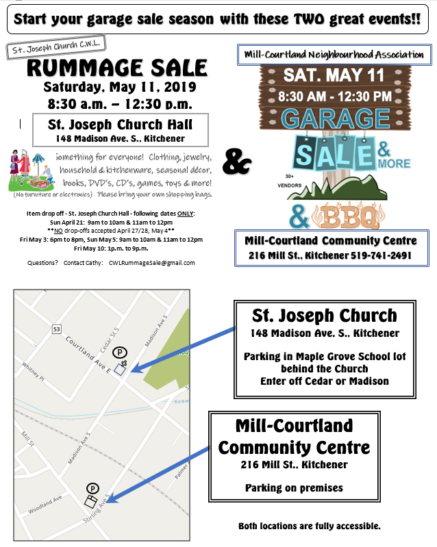

St Joseph
Roman Catholic Church
Tel: 519-745-9302 • Fax: 519-741-9944 • E-Mail:
office@stjosephkitchener.org
Home
Sacraments
News
Calendar
Location
Parish Life
Bulletins
Links
☰
St Joseph's News
Items of interest in the St. Joseph community. See the
bulletin
for more items!
CWL Rummage Sale
